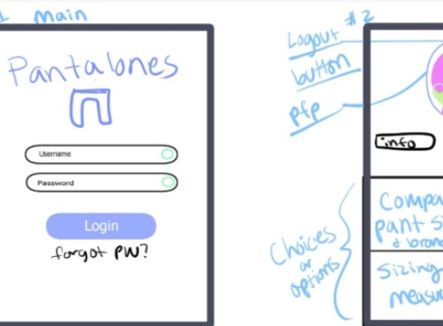
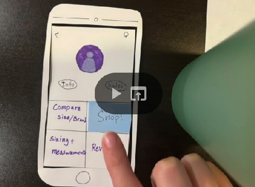

Problem Statement: Women's Jeans

It’s not uncommon to hear complaints about the design of women’s clothing, the most common grievance being that jeans in the same size from different brands don’t fit. This creates an annoying guessing game of sizes when the measurements should be standardized. A database of jean sizes and their equivalencies across various brands will save time, effort, and tears in the dressing room.
Affinity Diagram: Women's Jeans

My group and I passionately explored the struggles of shopping for women's jeans and our want to make that experience easier.
Persona: 4 Personas for Women's Jeans

Four different personas for a individuals that could use this app to shop for women's jeans.
Storyboard: The Need for Women's Jeans

Storyboards explaining why each of our personas would need an app like ours.
Sketches: Women's Jeans Concept
Rough concepts for how the app may look.
Paper Prototype: Women's Jeans
A rough paper walkthrough of the potential design of the app.